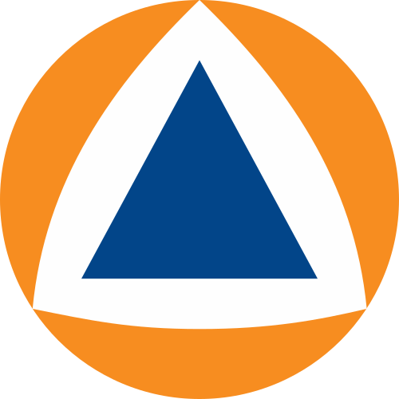
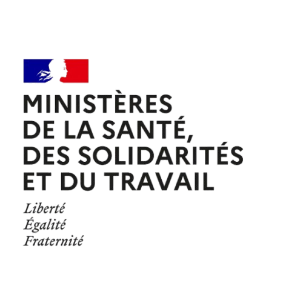
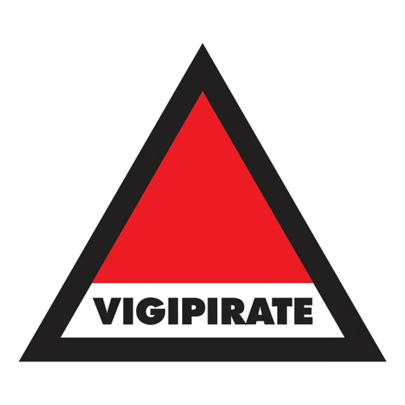

Le préfet
Représentant de l'État sur un territoire. Il fait appliquer les décisions du gouvernement et veille à l'ordre public.
Wiki institutionnel · Préfecture de Police LGP
Comprendre le rôle du préfet, du préfet de police et de la préfecture : forces de sécurité, secours, entreprises et procédures.
Document de référence — usage roleplayChapitre 01
Préfet, préfet de police, préfecture : ces mots reviennent souvent en jeu, mais leur sens exact reste flou pour beaucoup de joueurs. Ce wiki pose des bases simples pour que chacun puisse jouer son rôle avec cohérence.
Les informations présentées concernent Paris et l'agglomération du Grand Paname. Vous y trouverez le rôle du préfet face aux forces de l'ordre, aux secours et aux entreprises privées, ainsi que quelques procédures du quotidien. Pour rejoindre nos services, consultez la page Nos emplois.
Représentant de l'État sur un territoire. Il fait appliquer les décisions du gouvernement et veille à l'ordre public.
L'ensemble des services de l'État placés sous l'autorité du préfet : accueil du public, autorisations, titres et démarches.
Autorité spécifique à Paris, chargée de l'ordre public, de la circulation et de la sécurité des personnes et des biens.
Contenu roleplay. Ce wiki sert de référence pour le jeu de rôle sur le serveur LGP. Il ne remplace aucun texte réglementaire réel et certaines règles sont adaptées au jeu.
Chapitre 02
Il existe plusieurs préfets (un par département, un par région), mais un seul préfet de police à Paris. Les deux représentent l'État et dépendent du ministre de l'Intérieur ; ce qui change, c'est l'étendue de leurs pouvoirs en matière de police.
| Critère | Préfet | Préfet de police |
|---|---|---|
| Territoire | Un département ou une région. | Paris, avec des compétences étendues à l'agglomération. |
| Police administrative | Ordre public et réglementation sur son territoire. | Ordre public, circulation, sécurité des personnes et des biens à Paris. |
| Forces de l'ordre | Coordonne la police et la gendarmerie présentes. | Dirige directement les services de police parisiens. |
| Secours | Prend la direction des secours en cas de crise majeure. | Autorité sur les sapeurs-pompiers de Paris en situation de crise. |
| Rattachement | Ministre de l'Intérieur. | Ministre de l'Intérieur. |
À retenir en jeu : le préfet de police est le référent pour tout ce qui touche à l'ordre public dans la ville ; la préfecture reste le guichet pour les démarches des citoyens.
Chapitre 03
Les forces de sécurité intérieure regroupent la Police nationale et la Gendarmerie nationale, parfois appuyées par les polices municipales. Le préfet est responsable du maintien de l'ordre public sur son territoire : il fixe les objectifs, coordonne les forces et arbitre en cas de besoin.
Anticiper les risques : événements, rassemblements, périodes sensibles.
Faire travailler ensemble police, gendarmerie et services partenaires.
Décider de la répartition des moyens quand plusieurs besoins se présentent.
Informer le ministre de l'Intérieur de la situation et des décisions prises.
La police administrative vise à prévenir les troubles (c'est le domaine du préfet). La police judiciaire constate les infractions et mène les enquêtes sous l'autorité de la justice.
Limite importante : le préfet n'est pas un enquêteur. Il ne dirige pas les enquêtes judiciaires, qui relèvent du procureur et des juges.
Chapitre 04
Sur son territoire, le préfet dispose de la Police nationale pour assurer l'ordre public. Il décide où et pourquoi les unités sont engagées ; le comment reste du ressort de leur commandement.
Ce que le préfet ne peut pas faire : intervenir dans une enquête judiciaire en cours, ni ordonner d'arrêter ou de classer une procédure. Ces décisions appartiennent à la justice.
Chapitre 05
La Gendarmerie nationale est une force armée à statut militaire, rattachée au ministère de l'Intérieur. Pour l'ordre public, elle est mise à la disposition du préfet, comme la Police nationale.
Il donne les objectifs et les missions à remplir : sécurisation, maintien de l'ordre, renforts.
L'organisation interne, la discipline et les moyens restent gérés par le commandement de la gendarmerie.
En pratique : le préfet transmet une demande ou un ordre d'emploi à l'officier de gendarmerie responsable, qui choisit les moyens pour l'exécuter.
Chapitre 06

En temps normal, les secours s'organisent seuls. Quand un événement dépasse les moyens locaux ou touche plusieurs secteurs, le préfet prend la direction des opérations de secours et déclenche le dispositif d'organisation de la réponse de sécurité civile (ORSEC).
Dirige l'ensemble de la réponse, mobilise les moyens et décide des mesures de protection de la population.
Un officier des sapeurs-pompiers commande les équipes sur le terrain.
Pompiers, urgences médicales, police, gendarmerie et associations agréées de sécurité civile.
Chapitre 07
Les entreprises sont libres d'exercer leur activité. Le préfet n'intervient que pour protéger l'ordre public, la sécurité et la santé des personnes : il autorise, contrôle et, si nécessaire, sanctionne.
Agrément et contrôle des sociétés et agents de sécurité.
Horaires, troubles à l'ordre public, possibilité de fermeture administrative.
Respect des règles de sécurité incendie et de capacité d'accueil.
Autorisation préalable des manifestations et événements importants.
Pour les joueurs : une entreprise qui pose problème est d'abord avertie ; la fermeture administrative reste une mesure de dernier recours.
Chapitre 08
La régularisation administrative consiste à remettre en conformité une situation qui ne respecte pas, ou plus, les règles : document manquant ou expiré, activité exercée sans autorisation, déclaration oubliée.
Attention : sans régularisation dans les délais, la Préfecture peut prononcer une amende, retirer une autorisation ou ordonner une fermeture administrative.
Chapitre 09

L'inspection du travail veille au respect des règles qui protègent les salariés : conditions de travail, sécurité, déclaration des employés, lutte contre le travail dissimulé.
Visites en entreprise, vérification des registres et des conditions de travail.
Informer employeurs et salariés sur leurs droits et obligations.
Mise en demeure, procès-verbal, transmission à la justice si nécessaire.
Lien avec la Préfecture : l'inspection du travail dépend du ministère chargé du Travail, pas du préfet. Les deux travaillent ensemble : en cas de travail illégal constaté, le préfet peut décider d'une fermeture administrative temporaire de l'établissement.
Chapitre 10
L'huissier de justice est un officier public qui signifie les actes, dresse des constats et fait exécuter les décisions de justice (saisies, expulsions…). Il n'est pas un agent de la Préfecture, mais il a parfois besoin de son appui.
Lorsqu'une décision de justice doit être exécutée malgré le refus de la personne concernée (une expulsion, par exemple), l'huissier demande au préfet l'appui de la police ou de la gendarmerie.
Bon à savoir : dans la réalité, la profession d'huissier de justice a été regroupée depuis 2022 sous le nom de « commissaire de justice ». Sur LGP, le terme « huissier » reste utilisé.
Chapitre 11

Vigipirate est le plan national de vigilance, de prévention et de protection face à la menace terroriste. Le niveau est fixé au plan national ; le préfet décline ensuite les mesures sur son territoire.
Niveau permanent. Présence visible des forces de l'ordre dans les lieux sensibles et sensibilisation du public.
Contrôles d'accès et de sacs renforcés, patrouilles supplémentaires, surveillance accrue des événements.
Menace imminente ou attentat en cours : périmètres de sécurité, restrictions de circulation, mobilisation maximale.
Sur LGP : le niveau en vigueur est annoncé par la Préfecture. Suivez les actualités pour connaître les consignes en cours.
Une question sur le contenu de ce wiki ou sur une procédure ? L'équipe de la Préfecture peut vous répondre.
Contactez la Préfecture